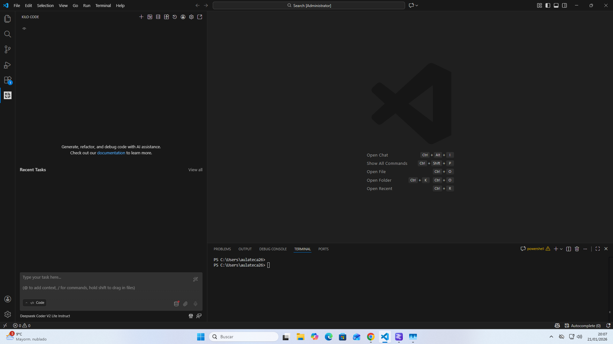
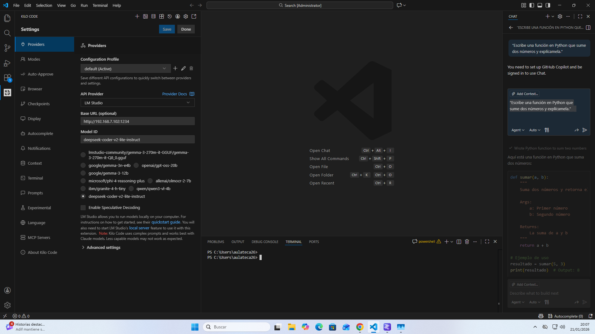
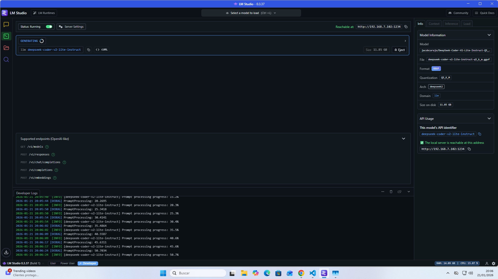
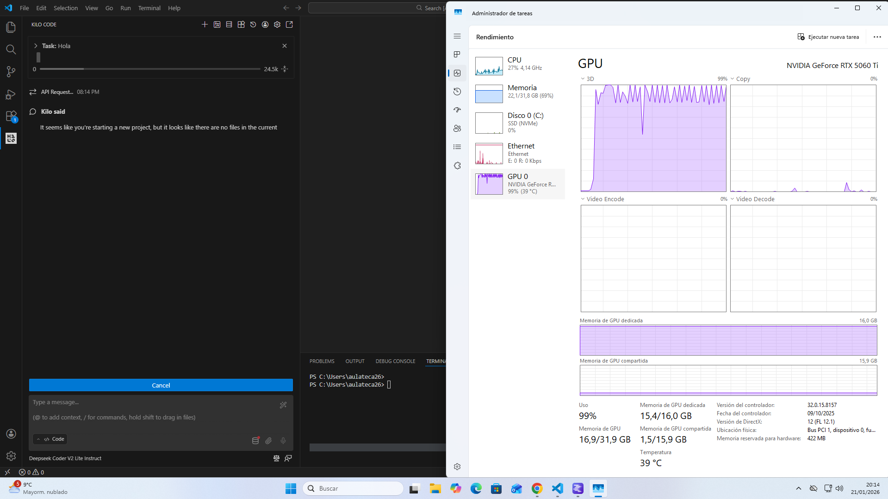
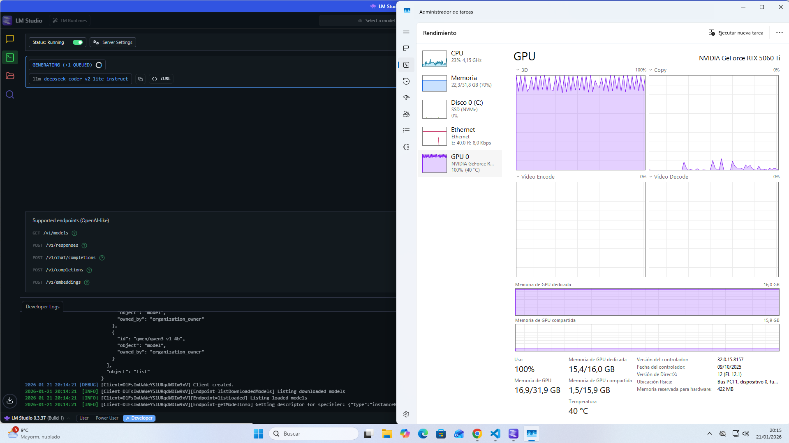

Guía paso a paso en Windows para usar Kilo Code en Visual Studio Code conectado a un modelo de lenguaje ejecutado en local mediante LM Studio y GPU.
El objetivo es dejar configurado un agente de programación que funcione completamente en local: Kilo Code actuará como asistente dentro de VS Code y LM Studio ejecutará el modelo LLM (por ejemplo, un modelo de tipo coder como DeepSeek) usando la GPU del equipo.[web:95][web:16]
De esta forma se consigue privacidad sobre el código, se evitan costes de API en la nube y se aprovecha la potencia de la tarjeta gráfica para acelerar la generación de código.[web:1][web:41]
http://localhost:1234 consumida por Kilo Code.[web:16]
Abre Visual Studio Code y ve al panel de extensiones con Ctrl + Shift + X.
En el buscador escribe Kilo Code y selecciona la extensión oficial publicada
en el Marketplace.[web:93][web:94]
Pulsa en Install y, cuando termine, recarga la ventana de VS Code si se solicita. Deberías ver un nuevo icono de Kilo Code en la barra lateral izquierda o derecha del editor.[web:95]
Haz clic en el icono de Kilo Code para abrir su panel. Si se abre un área lateral con opciones de proveedor y un cuadro de chat, la extensión está instalada correctamente y lista para conectarse a un modelo local.


En el panel de Kilo Code, pulsa el icono de engranaje para abrir la configuración.
En el apartado API Provider selecciona la opción
LM Studio, que permite a Kilo Code usar el servidor local expuesto por LM Studio.[web:16]
En el campo Base URL introduce
http://localhost:1234, que es la dirección por defecto del servidor HTTP
de LM Studio cuando se ejecuta el local server.[web:16]
En Model ID escribe exactamente el identificador del modelo cargado
en LM Studio (normalmente coincide con el nombre del archivo GGUF, por ejemplo
deepseek-coder-v2-lite-instruct-q5_k_m.gguf). Esto indica a Kilo Code qué
modelo debe usar para las peticiones.
Tuvimos problemas a la hora de poner en marcha el enlazamiento por que no nos salia el modelo, reinstalamos kilo code y nos empezo a salir.

Abre LM Studio y ve a la pestaña Local Server o al panel destinado a exponer la API compatible con OpenAI.[web:41][web:16] Selecciona en la lista un modelo de codificación (por ejemplo DeepSeek Coder o un modelo tipo Qwen/CodeLlama en formato GGUF) y pulsa Start Server hasta que aparezca el estado “Running”.
Cambia a la pestaña Developer de LM Studio e introduce un prompt de prueba,
por ejemplo: Escribe una función PHP que conecte a MySQL usando PDO. Si el
modelo responde con código, el servidor local está funcionando correctamente.
curl http://localhost:1234/v1/modelsEl comando anterior, ejecutado desde PowerShell o la terminal integrada de VS Code, debería devolver un listado JSON de modelos disponibles en el servidor de LM Studio, donde verás el identificador del modelo de codificación que estás utilizando.[web:41]

Abre el Administrador de tareas de Windows, ve a la pestaña Rendimiento y selecciona la GPU. Deja esta ventana a un lado de la pantalla y, al mismo tiempo, realiza una generación larga de texto desde la pestaña Developer de LM Studio.
Mientras el modelo responde, deberían observarse picos de actividad en la gráfica de la GPU, lo que confirma que la inferencia se está realizando de forma acelerada por hardware.

Con el servidor de LM Studio en marcha y Kilo Code configurado, abre un proyecto en VS Code y accede al panel de chat de Kilo Code. Escribe una petición como:
Crea una aplicación PHP completa con CRUD de usuarios en MySQL,
usando PDO, validación básica de formularios y sesiones para el login.Kilo Code enviará la petición al modelo en LM Studio, recibirá la respuesta y propondrá cambios o archivos nuevos dentro de tu espacio de trabajo. Durante la generación, la gráfica de GPU en el Administrador de tareas volverá a mostrar picos de uso, indicando que el agente está trabajando en local.
Para confirmar que Kilo Code no está usando un proveedor en la nube, puedes lanzar otra
vez curl http://localhost:1234/v1/models mientras pides código desde el chat
de Kilo Code y observar que LM Studio registra peticiones nuevas en sus logs.[web:16][web:41]